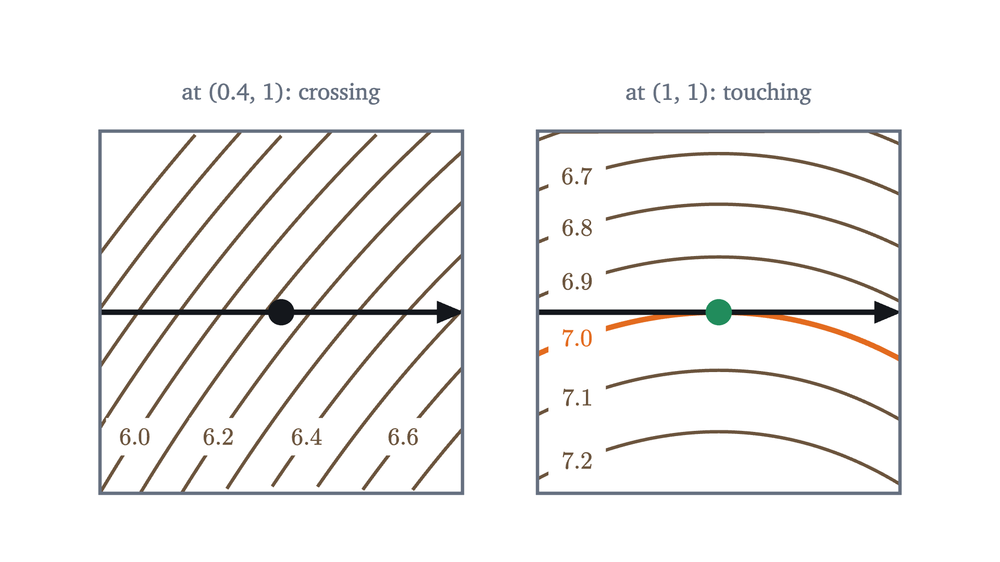
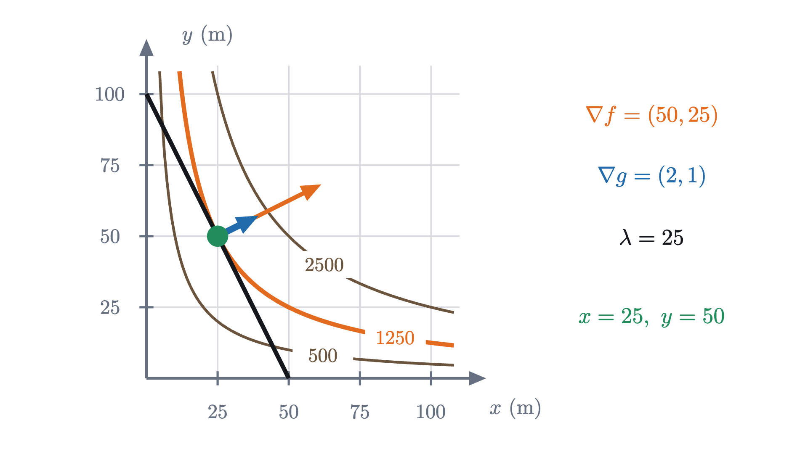
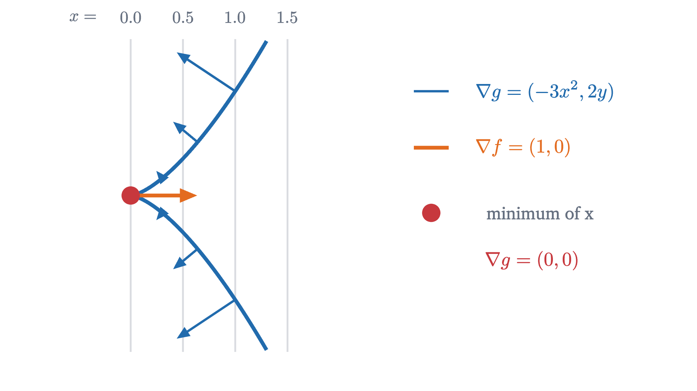

Lagrange multipliers: the best point on a path
The highest point of a trail is where the trail just touches a contour line. There the gradients of the height and of the constraint are parallel.
AssumesThe gradient: which way is uphill?Surfaces and contour maps: functions of two variablesMaxima and minima: where the slope is zero
A trail crosses a hill without going over the top. Where along the trail are you highest? The summit is no help, because you are not allowed to leave the trail. The usual method for finding a highest point, looking for a place where the ground is level, is no help either: nowhere on this trail is the ground level. The trail’s high point is on a slope, and the hill keeps rising to one side of it.
This is a constrained optimization problem: maximize one quantity while a second condition holds. Such problems are everywhere (the largest area for a fixed length of fence, the cheapest can holding a fixed volume), and one geometric idea is behind the standard method for them.
We use the hill from the previous two lessons. At the point $x$ km east and $y$ km north of a marker post its height, in hundreds of meters, is
with its summit at $(1, 0)$, at height 8. We will need two facts from those lessons. A level curve (contour line) of $f$ is the set of points where $f$ equals a given constant. The gradient $\nabla f = (f_x, f_y)$, here $(3 - 3x^2, -2y)$, is perpendicular to the level curve through each point, and the slope of the hill in the direction of a unit vector $\mathbf{u}$ is the dot product $\nabla f \cdot \mathbf{u}$. Both facts were proved for differentiable functions, and every polynomial is one.
A straight trail, solved by hand
Take the simplest trail first: the east-west line $y = 1$. On it there is only one free variable, so this is a one-variable problem in disguise. The height along the trail is
The derivative is zero at $x = \pm 1$. Comparing $h(1) = 7$ and $h(-1) = 3$ with the heights at the ends of the trail, $h(-1.75) \approx 5.11$ and $h(2) = 3$, the closed interval method gives the highest point: $(1, 1)$, at height 7.
Now look at that point on the map instead of in the algebra. The gradient of the hill there is $\nabla f(1, 1) = (0, -2)$, which is not zero. The hill slopes up to the south, toward the summit; the trail runs east. What is special about $(1, 1)$ is how the trail meets the contour lines.

This has to happen, and here is a sketch of the reason. A contour line separates higher ground from lower ground. If the trail crosses the contour through a point, then just ahead on the trail you are on the higher side and just behind you are on the lower side, so the point is neither the highest nor the lowest on the trail. At a highest point the trail therefore cannot cross the contour. It can only touch it and stay on one side: the trail and the contour are tangent. This is a sketch because it takes for granted that the contour is a curve with a high side and a low side and that the trail crosses it cleanly. The theorem below states exactly what is needed, and its proof replaces the picture.
Pause and try
Check the tangency by algebra. Show that $7 - f(x, 1) = (x - 1)^2(x + 2)$, and explain what the squared factor says about how the trail meets the contour at height 7.
Show answerHide answer
$7 - f(x, 1) = 7 - 5 - 3x + x^3 = x^3 - 3x + 2$. Since $x = 1$ is a root, divide by $x - 1$: $x^3 - 3x + 2 = (x - 1)(x^2 + x - 2) = (x - 1)^2(x + 2)$. On the map $x + 2 > 0$, so $7 - f(x, 1) \ge 0$ with equality only at $x = 1$. A simple root would mean $f - 7$ changes sign and the trail crosses the contour. The double root means the trail reaches height 7 and turns back without crossing.
Tangency in terms of gradients
“The trail is tangent to a contour” is a statement about directions, and gradients are how we compute with directions. The gradient $\nabla f$ is perpendicular to the contour. If the trail is tangent to the contour, then $\nabla f$ is perpendicular to the trail as well. Equivalently, the slope of the hill along the trail is zero there, even though the hill itself is not level.
For the straight trail we could solve for $y$ and substitute. Most constraints are not so obliging. A trail that loops around the summit is a circle, $(x - 1)^2 + y^2 = 1$, and solving that for $y$ gives two square-root branches that are unpleasant to differentiate; many constraints cannot be solved for either variable at all. We are stuck on a practical point: how do we say “perpendicular to the trail” when all we have is an equation for the trail?
The way out is to notice what kind of object the trail is. An equation $g(x, y) = c$ says that the trail is a level curve of the function $g$. And we know a vector perpendicular to a level curve of $g$: the gradient $\nabla g$. For the straight trail, $g(x, y) = y$ and $\nabla g = (0, 1)$, which does point straight across the trail.
So at the highest point of the trail, two vectors are perpendicular to the trail: $\nabla f$, because the contour of $f$ is tangent to the trail there, and $\nabla g$, because the trail is a contour of $g$. In the plane, two vectors perpendicular to the same line lie along the same line. So, provided $\nabla g$ is not the zero vector, $\nabla f$ is a multiple of it:
At $(1, 1)$ on the straight trail this reads $(0, -2) = \lambda\,(0, 1)$, true with $\lambda = -2$. The number $\lambda$ (lambda) is called a Lagrange multiplier.
The theorem
Each hypothesis does a job. Continuity of the partial derivatives makes $f$ and $g$ differentiable, which is what the facts about gradients require (the previous lesson showed that existence of the partial derivatives alone is not enough). Hypothesis (1) is the trail’s high or low point. Hypothesis (2) is the one that is easy to forget, and the proof shows what it is for.
Steps 2 to 4 are complete. Step 1 is where the implicit function theorem contributes: it turns “the set of solutions of an equation” into “a curve you can walk along with nonzero velocity”, which is what the tangency picture silently assumed. It needs $\nabla g(P) \neq \mathbf{0}$, and we will see below that the conclusion can fail without it.
Notice also what the theorem does not say. It does not say a maximum exists, and it does not say that a point where the gradients are parallel is a maximum. It gives a necessary condition. In practice it is used like the equation $h'(x) = 0$ in one variable: to produce a short list of candidates.
The method. To find the extreme values of $f$ on the curve $g = c$, solve the three equations
for the three unknowns $x$, $y$, $\lambda$. Add to the list any points of the curve where $\nabla g = \mathbf{0}$, and the endpoints if the curve has ends. Then compare the values of $f$. If the curve is closed and bounded (a circle, a segment with its endpoints) and $f$ is continuous, the extreme value theorem in two variables guarantees that a maximum and a minimum exist, so they are on the list.
Two worked examples

Now a problem where substitution is awkward and the method earns its place.
Pause and try
The candidate $(0, 0)$, at height 6, is neither the highest nor the lowest point of the ring trail. What is it? Use the formula $f = 7 - 2\cos^2 t - \cos^3 t$ near $t = 180^\circ$, or the map.
Show answerHide answer
Put $s = \cos t$, so $f = 7 - 2s^2 - s^3$ with $s$ between $-1$ and $1$, and $(0, 0)$ is $s = -1$. The derivative with respect to $s$ is $-4s - 3s^2 = -s(4 + 3s)$, which at $s = -1$ equals $1 > 0$. So as $s$ increases from $-1$, which is what happens when you leave $(0, 0)$ in either direction along the ring, the height increases. The point $(0, 0)$ is a local minimum: the lowest point of the western half of the trail, though the eastern side dips lower. The theorem covers local extremes as well as global ones, which is why it appears on the list.
In both examples the multiplier came out negative or positive without our caring. Its sign says only whether the two gradients point the same way or opposite ways along their common line.
When the hypothesis fails
Hypothesis (2), $\nabla g(P) \neq \mathbf{0}$, looks like fine print. Here is a problem where ignoring it loses the answer.
Minimize $f(x, y) = x$ on the curve $y^2 = x^3$, that is, $g(x, y) = y^2 - x^3 = 0$. On this curve $x^3 = y^2 \ge 0$, so $x \ge 0$, and $x = 0$ happens at the origin. The minimum of $f$ is 0, at $(0, 0)$. No calculus was needed.
Now run the method. $\nabla f = (1, 0)$ and $\nabla g = (-3x^2, 2y)$, so the equations are
The first forces $\lambda \neq 0$, so the second gives $y = 0$, the third then gives $x = 0$, and the first becomes $1 = 0$. The system has no solutions at all, although the minimum exists.

Nothing is wrong with the theorem. At the origin $\nabla g = (0, 0)$, hypothesis (2) fails, and the theorem makes no claim. Geometrically the curve has a cusp there, a sharp point, and Step 1 of the proof breaks down: near the origin the curve cannot be traced by any $\mathbf{r}(t)$ with nonzero velocity. This is why the method says to add the points where $\nabla g = \mathbf{0}$ to the list of candidates by hand.
Pause and try
Find all points of the curve $y^2 = x^3$ where $\nabla g = \mathbf{0}$, and confirm that adding them to the (empty) list of solutions repairs the method.
Show answerHide answer
$\nabla g = (-3x^2, 2y)$ is zero only when $x = 0$ and $y = 0$, and $(0, 0)$ is on the curve. The candidate list is then the single point $(0, 0)$, with $f = 0$. The curve is not bounded, so the list alone does not prove this is a minimum, but the direct argument ($x \ge 0$ on the curve) does. There is no maximum, since $x$ can be as large as we like on the curve.
Check yourself
The functions $f$ and $g$ have continuous partial derivatives. At a point $P$ on the curve $g = c$, you compute $\nabla f(P) = (6, -3)$ and $\nabla g(P) = (2, 1)$. What can you conclude?
Looking back, the difficulty was that the answer sits on a slope, where the usual signal of a maximum, a level tangent plane, is absent. The idea that replaced it is to compare two families of level curves: at the best point, the constraint curve is tangent to a level curve of the function, and gradients turn that picture into equations. The same statement holds with more variables and more constraints, with one multiplier for each constraint, and much of constrained optimization starts from it.
Problems
Problems 1 and 2 are warm-ups, 3 to 5 combine ideas, and 6 and 7 go further. The hill is $f(x, y) = 6 + 3x - x^3 - y^2$.
Problem 1
Find the largest and smallest values of $f(x, y) = x + 2y$ on the circle $x^2 + y^2 = 5$.
Show solutionHide solution
$\nabla f = (1, 2)$ and $\nabla g = (2x, 2y)$, which is nonzero on the circle. The equations $1 = 2\lambda x$ and $2 = 2\lambda y$ show $\lambda \neq 0$ and give $x = \tfrac{1}{2\lambda}$, $y = \tfrac{1}{\lambda}$, so $y = 2x$. Then $x^2 + 4x^2 = 5$, so $x = \pm 1$. The candidates are $(1, 2)$ with $f = 5$ and $(-1, -2)$ with $f = -5$. The circle is closed and bounded, so these are the maximum, 5, and the minimum, $-5$.
Problem 2
A rectangle has perimeter 20. Use a Lagrange multiplier to find the dimensions with the largest area, and say what the value of $\lambda$ tells you.
Show solutionHide solution
Maximize $f = xy$ subject to $g = 2x + 2y = 20$, with $x, y \ge 0$. The equations are $y = 2\lambda$, $x = 2\lambda$, $2x + 2y = 20$. So $x = y$, then $4x = 20$, $x = y = 5$, and $\lambda = 2.5$. The constraint set is a closed segment with area 0 at both ends, so the maximum is the square, with area 25. The multiplier is the rate at which the best area grows with the perimeter: with perimeter $p$ the best area is $(p/4)^2 = p^2/16$, whose derivative at $p = 20$ is $p/8 = 2.5$.
Problem 3
On the hill, a straight trail runs north-south along the line $x = 0$. Find its highest point by Lagrange multipliers. Then find the highest point of the parallel trail $x = 0.1$ directly, and compare the gain in height with $\lambda$.
Show solutionHide solution
The constraint is $g(x, y) = x = 0$, with $\nabla g = (1, 0)$. The equations are $3 - 3x^2 = \lambda$, $-2y = 0$, $x = 0$, so $y = 0$ and $\lambda = 3$: the point $(0, 0)$, at height 6. It is a maximum because on the trail $f(0, y) = 6 - y^2 \le 6$. On the trail $x = 0.1$ the height is $6 + 0.3 - 0.001 - y^2$, largest at $y = 0$, where it is $6.299$. Moving the trail east by $0.1$ raised its top by $0.299$, close to $\lambda \times 0.1 = 0.3$. The multiplier is the rate of change of the best value as the constraint level $c$ changes.
Problem 4
Find the point of the line $3x + 4y = 25$ closest to the origin. Explain why the candidate you find is a minimum and why there is no maximum.
Show solutionHide solution
Minimize the squared distance $f = x^2 + y^2$ (it has the same minimizer as the distance and simpler derivatives) subject to $g = 3x + 4y = 25$. The equations $2x = 3\lambda$, $2y = 4\lambda$ give $x = \tfrac32\lambda$, $y = 2\lambda$, and then $\tfrac92\lambda + 8\lambda = 25$, so $\lambda = 2$ and the point is $(3, 4)$, at distance 5. The line is not bounded, so existence needs an argument: far along the line the distance to the origin is larger than 5, so the minimum over the whole line equals the minimum over a long closed segment, which exists and lies inside the segment, hence is a candidate. There is only one candidate, so it is the minimum. There is no maximum because the distance grows without bound along the line.
Problem 5
Find the maximum and minimum of $f(x, y) = xy$ on the ellipse $\dfrac{x^2}{8} + \dfrac{y^2}{2} = 1$.
Show solutionHide solution
$\nabla f = (y, x)$ and $\nabla g = \left(\tfrac{x}{4}, y\right)$, zero only at the origin, which is not on the ellipse. The equations are $y = \tfrac{\lambda x}{4}$ and $x = \lambda y$. Substituting the second into the first, $y = \tfrac{\lambda^2 y}{4}$, so $y = 0$ or $\lambda = \pm 2$. If $y = 0$ then $x = \lambda y = 0$, not on the ellipse. If $\lambda = 2$ then $x = 2y$, and the constraint gives $\tfrac{4y^2}{8} + \tfrac{y^2}{2} = y^2 = 1$: the points $(2, 1)$ and $(-2, -1)$, where $f = 2$. If $\lambda = -2$ then $x = -2y$ and again $y^2 = 1$: the points $(-2, 1)$ and $(2, -1)$, where $f = -2$. The ellipse is closed and bounded, so the maximum is 2 and the minimum is $-2$.
Problem 6
The straight trail $y = 1$ can also be described by the equation $G(x, y) = (y - 1)^2 = 0$. Show that with this description the Lagrange equations for the hill have no solution on the trail, and explain how that is consistent with the theorem.
Show solutionHide solution
$\nabla G = (0, 2(y - 1))$, which is $(0, 0)$ at every point of the trail, where $y = 1$. The equations $\nabla f = \lambda \nabla G$ on the trail become $(3 - 3x^2, -2) = (0, 0)$, and the second component $-2 = 0$ is impossible. So there are no solutions, although the trail has a highest point at $(1, 1)$. This does not contradict the theorem, because hypothesis (2), $\nabla G(P) \neq \mathbf{0}$, fails at every point of the trail. The same curve can be the level set of a good function ($g = y$) or a bad one ($G = (y - 1)^2$); the hypothesis is about the function used to describe the constraint. With $G$, the rule “add the points where $\nabla G = \mathbf{0}$” adds the entire trail and the method gives no help.
Problem 7
Let $f(x, y) = x^3 + y$ and let the constraint be $g(x, y) = y = 0$. Find all solutions of the Lagrange equations and decide whether each is a local maximum, a local minimum or neither of $f$ on the constraint. What does this show about the theorem?
Show solutionHide solution
$\nabla f = (3x^2, 1)$ and $\nabla g = (0, 1) \neq \mathbf{0}$. The equations are $3x^2 = 0$, $1 = \lambda$, $y = 0$, with the single solution $(0, 0)$, $\lambda = 1$. On the constraint, $f(x, 0) = x^3$, which is negative for $x < 0$ and positive for $x > 0$, so the origin is neither a local maximum nor a local minimum. All the hypotheses about smoothness and $\nabla g$ hold, and the gradients are parallel, yet the point is not an extreme point. The theorem says extreme points satisfy $\nabla f = \lambda \nabla g$; the converse is false, exactly as $h'(a) = 0$ does not make $a$ an extreme point of $h(x) = x^3$.